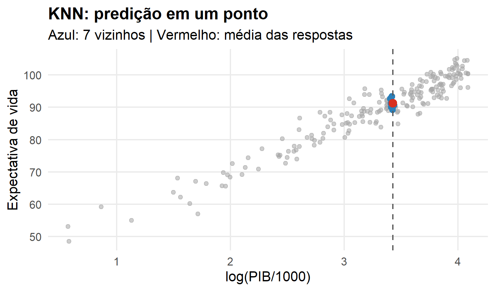
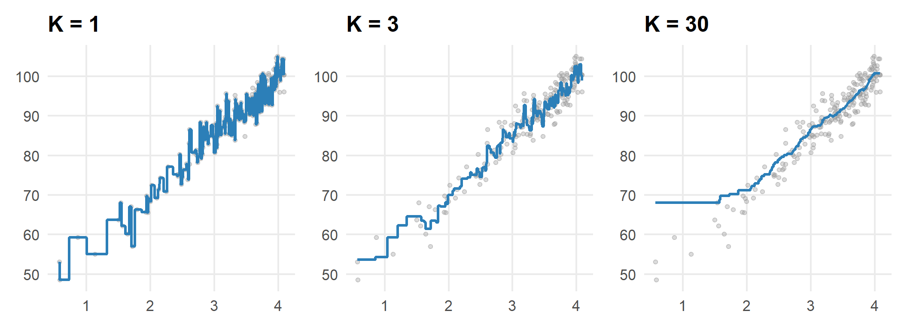
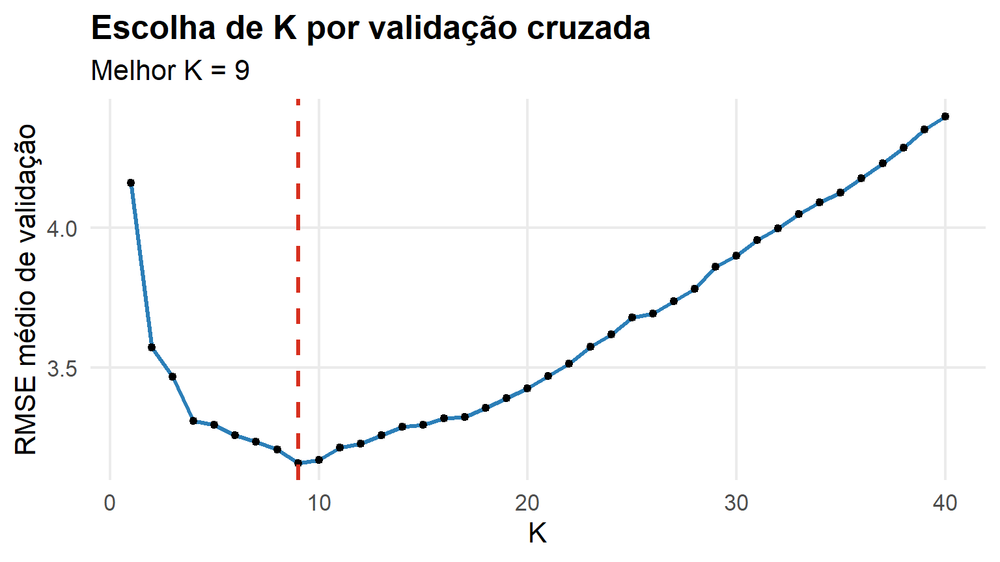
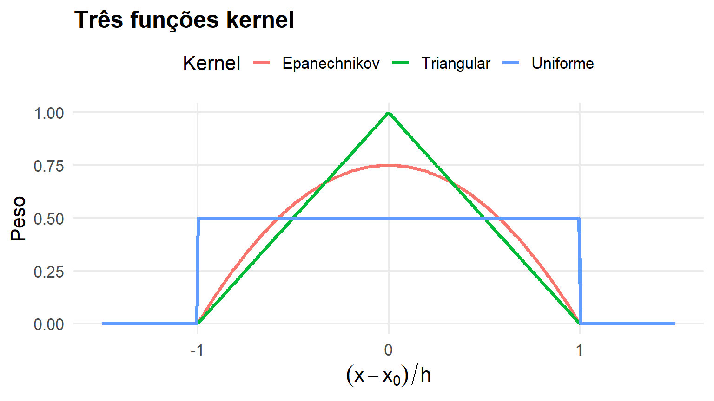
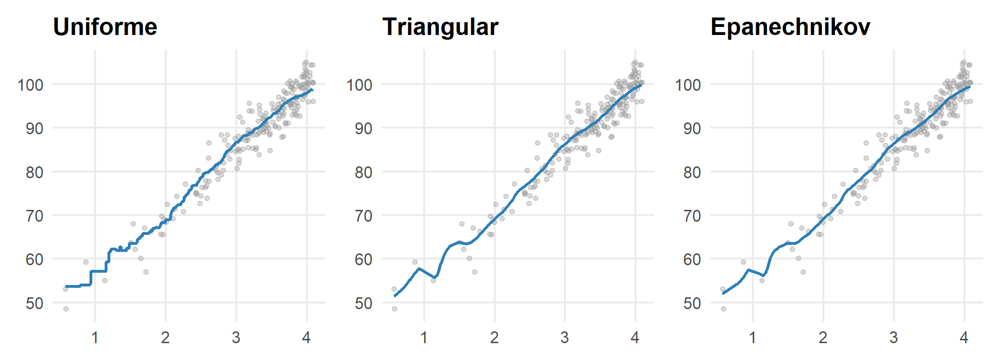
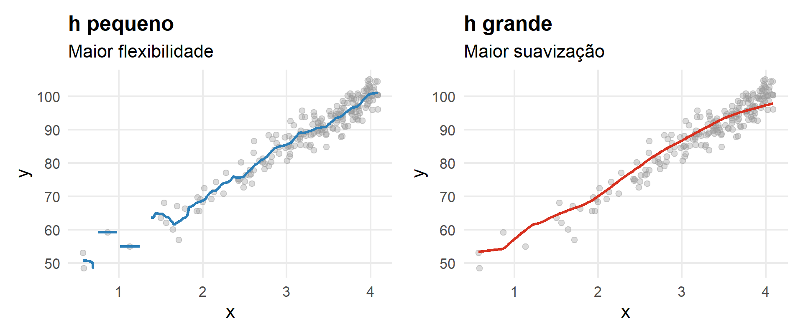

Parte I : Regressão
Regressão Não Paramétrica: KNN e Métodos de Kernel
De onde partimos?
Até agora especificamos uma forma para \(g(x)\): reta, polinômio ou spline.
Agora perguntaremos:
\[ \boxed{\text{É possível aprender }r(x)\text{ diretamente da vizinhança dos dados?}} \]
Ideia central
Queremos estimar
\[ r(x)=E(Y\mid X=x) \]
sem impor uma forma global rígida.
\[ \boxed{\text{Observações próximas em }X\text{ devem influenciar mais a predição}} \]
Regressão KNN
Uma pergunta local
Para prever \(Y\) em \(x_0\):
Quais observações de treinamento são mais parecidas com \(x_0\)?
Usamos então as respostas dessas observações para construir a predição.
O estimador KNN
Se \(N_K(x_0)\) são os \(K\) vizinhos mais próximos,
\[ \boxed{ \widehat r_K(x_0)= \frac1K\sum_{i\in N_K(x_0)}Y_i } \]
\[ \text{localizar}\rightarrow\text{selecionar vizinhos}\rightarrow\text{calcular a média} \]
Uma predição com \(K=7\)
De um ponto para uma curva
Repetimos o procedimento para muitos \(x_0\):
- encontramos os \(K\) vizinhos;
- calculamos a média de \(Y\);
- obtemos \(\widehat r_K(x_0)\).
Comparando \(K=1,3,30\)

O papel de \(K\)
\[ K\downarrow\Rightarrow\text{vizinhança pequena}\Rightarrow\text{maior flexibilidade} \]
\[ K\uparrow\Rightarrow\text{vizinhança grande}\Rightarrow\text{maior suavização} \]
\[ \boxed{K=\text{hiperparâmetro de complexidade}} \]
Viés × variância
\(K\) pequeno
- baixo viés;
- alta variância;
- maior adaptação local;
- maior risco de sobreajuste.
\(K\) grande
- maior viés;
- menor variância;
- curva mais suave;
- risco de subajuste.
KNN é baseado em instâncias
Ao contrário de um modelo paramétrico, o KNN precisa consultar os dados de treinamento para realizar novas predições.
\[ \boxed{\text{KNN é um método local / baseado em instâncias}} \]
A distância importa
Em uma dimensão:
\[ d(x_i,x_0)=|x_i-x_0| \]
Em \(p\) dimensões:
\[ d(\mathbf x_i,\mathbf x_0)= \sqrt{\sum_{j=1}^p(x_{ij}-x_{0j})^2} \]
Por que padronizar?
Se uma variável varia entre 0 e 1 e outra entre 0 e 100.000, a segunda pode dominar a distância.
\[ X_j^*=\frac{X_j-\bar X_j}{s_j} \]
Métodos baseados em distância são particularmente sensíveis à escala.
Escolha de \(K\) por validação cruzada

\[ \widehat K=\arg\min_K\widehat R_{CV}(K) \]
Regressão por Kernel
Uma limitação do KNN
No KNN, todos os vizinhos selecionados recebem o mesmo peso.
Uma observação quase coincidente com \(x_0\) pode receber o mesmo peso que o \(K\)-ésimo vizinho.
E se fizermos o peso diminuir com a distância?
A ideia do kernel
\[ w_i(x_0)= K\left(\frac{x_i-x_0}{h}\right) \]
Observações próximas recebem maior influência.
\(h\) controla a escala da vizinhança.
Estimador de Nadaraya–Watson
\[ \boxed{ \widehat r_h(x_0)= \frac{\sum_iK\left(\frac{x_i-x_0}{h}\right)Y_i} {\sum_iK\left(\frac{x_i-x_0}{h}\right)} } \]
É uma média local ponderada.
Três funções kernel

Kernels usuais
Uniforme:
\[ K(u)=\frac12I(|u|\le1) \]
Triangular:
\[ K(u)=(1-|u|)I(|u|\le1) \]
Epanechnikov:
\[ K(u)=\frac34(1-u^2)I(|u|\le1) \]
Mesmo \(h\), kernels diferentes

A escolha de \(h\) costuma ser mais importante que a forma exata do kernel.
O papel de \(h\)
\[ h\downarrow\Rightarrow\text{mais local}\Rightarrow\text{mais flexível} \]
\[ h\uparrow\Rightarrow\text{mais observações relevantes}\Rightarrow\text{mais suave} \]
\[ \boxed{h=\text{hiperparâmetro de suavização}} \]
Pequeno × grande \(h\)

KNN × Kernel
| Aspecto | KNN | Kernel |
|---|---|---|
| Vizinhança | \(K\) observações | controlada por \(h\) |
| Pesos | iguais | dependem da distância |
| Hiperparâmetro | \(K\) | \(h\) |
| Predição | média local | média local ponderada |
\[ \boxed{\text{mesma filosofia: aprender localmente}} \]
Escolha de \(h\)
Tratamos diferentes valores de \(h\) como candidatos:
\[ h_1,\ldots,h_M \]
Selecionamos por validação:
\[ \boxed{\widehat h=\arg\min_h\widehat R_{CV}(h)} \]
A maldição da dimensionalidade
O problema
Em uma dimensão, encontrar vizinhos próximos é fácil.
Quando \(p\) cresce, os dados tornam-se esparsos no espaço.
Uma vizinhança com observações suficientes precisa ocupar uma região cada vez maior.
Intuição geométrica
Em um hipercubo, para capturar uma fração \(q\) do volume:
\[ \boxed{\ell=q^{1/p}} \]
Para \(q=0.10\):
\[ p=1:\ell=0.10,\qquad p=2:\ell\approx0.32,\qquad p=10:\ell\approx0.79. \]
Consequência
\[ \boxed{ p\uparrow\Rightarrow\text{menos observações realmente próximas} } \]
Métodos locais tendem a funcionar melhor quando a dimensão efetiva é relativamente baixa.
Não paramétrico não significa “sem parâmetros”
Ainda precisamos escolher:
- \(K\);
- \(h\);
- métrica de distância;
- kernel;
- pré-processamento.
\[ \boxed{\text{não paramétrico}\neq\text{sem tuning}} \]
Integração
Três estratégias já estudadas
\[ \boxed{\text{funções de base}} \qquad \boxed{\text{regularização}} \qquad \boxed{\text{métodos locais}} \]
Todas tentam estimar a mesma função:
\[ r(x)=E(Y\mid X=x) \]
Comparando filosofias
| Método | Como aprende? | Controle |
|---|---|---|
| Linear | forma global | estrutura |
| Polinômio | forma global flexível | grau |
| Spline | funções por regiões | nós/suavização |
| Ridge/Lasso | modelo penalizado | \(\lambda\) |
| KNN | média dos vizinhos | \(K\) |
| Kernel | média local ponderada | \(h\) |
Quatro ideias para levar
- KNN estima \(r(x)\) por médias locais.
- Kernel usa pesos dependentes da distância.
- \(K\) e \(h\) controlam suavização e devem ser validados.
- Métodos locais sofrem com a maldição da dimensionalidade.